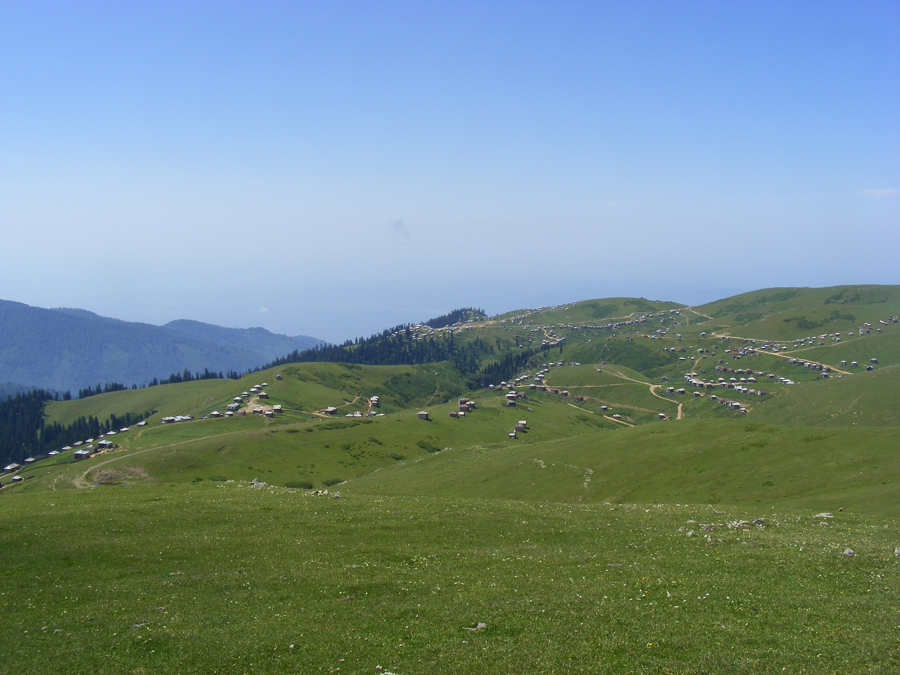
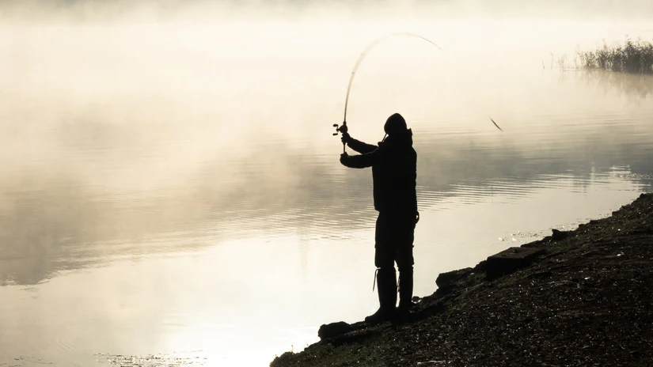
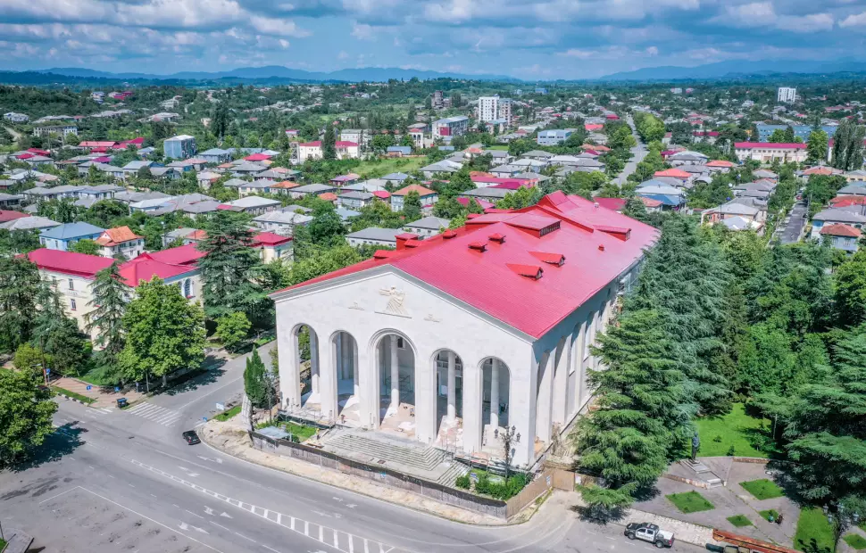
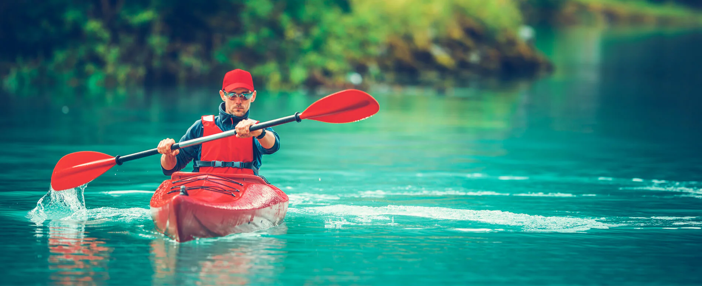

მდინარე ბჟუჟი ითვლება საქართველოში რაფტინგის ერთ-ერთ საუკეთესო ადგილად. თოვლის დნობის პერიოდში მდინარე გიჟდება და უზარმაზარ ტალღებს ქმნის... იხილეთ მეტი
გომის მთა (2755 მ) გურიის უმაღლესი მწვერვალია. აქედან იშლება საოცარი ხედი შავ ზღვაზე და კავკასიონის მთებზე. იდეალურია დღიური ლაშქრობისთვის... იხილეთ მეტი

ბახმარო (2000 მ) - იდეალური ადგილი ალპური კემპინგისთვის. ბუნების ულამაზესი პეიზაჟები, მთის ჰაერი და ვარსკვლავიანი ცა გელოდებათ... იხილეთ მეტი

გურიის მთიანეთი შესანიშნავი ადგილია პარაგლაიდინგისთვის. ციხისფერდისა და გომის მთის რაიონებიდან შესაძლებელია ფრენა საოცარ პეიზაჟებზე... იხილეთ მეტი
გურიის უხვნალიანი კანიონები და ჩანჩქერები შესანიშნავი ადგილია კანიონინგისთვის. ოზურგეთის რაიონის ხეობები სავსეა ჩანჩქერებით და კლდოვანი გზებით... იხილეთ მეტი

გურიის მთიანი ბილიკები იდეალურია მთის ველოსიპედით სეირნობისთვის. ხინოდან ბახმაროს გზა განსაკუთრებით პოპულარულია ველოსიპედისტებში... იხილეთ მეტი
გურიის კლდოვანი რელიეფი შესანიშნავი ადგილია როკ-კლაიმბინგისთვის. ოზურგეთისა და ჩოხატაურის რაიონებში მრავალი ბუნებრივი კლდეა, რომელიც იდეალურია როგორც დამწყებთათვის, ისე გამოცდილი მთამსვლელებისთვის... იხილეთ მეტი

ცხენით მოგზაურობა ალპურ მდელოებზე - ეს არის გურიის ბუნების განსაკუთრებული გზით შეცნობის საშუალება. ტურები ტარდება გომის მთისა და ბახმაროს მიმდებარე ტერიტორიებზე... იხილეთ მეტი
გურიაში თავგადასავლის სეზონი გრძელდება მაისიდან ოქტომბრამდე. რაფტინგისთვის საუკეთესო პერიოდია აპრილი-ივნისი (თოვლის დნობა), ხოლო ლაშქრობებისა და კემპინგისთვის - ივლისი-სექტემბერი. შემოდგომით კი ტყეები ფერადი ფოთლებით იფარება.
ოზურგეთში და ხინოში შეგიძლიათ გაიქირაოთ თავგადასავლისთვის საჭირო აღჭურვილობა - კარვები, ველოსიპედები, კემპინგის ინვენტარი... იხილეთ მეტი
ადგილობრივი გიდები კარგად იცნობენ რეგიონის ყველა ბილიკს და უსაფრთხოების წესებს. ისინი დაგეხმარებიან უსაფრთხოდ გაიაროთ ნებისმიერი მარშრუტი... იხილეთ მეტი
თავგადასავლის დროს აუცილებელია უსაფრთხოების წესების დაცვა. ყოველთვის აცნობეთ ადგილობრივ ხელისუფლებას თქვენი მარშრუტის შესახებ... იხილეთ მეტი